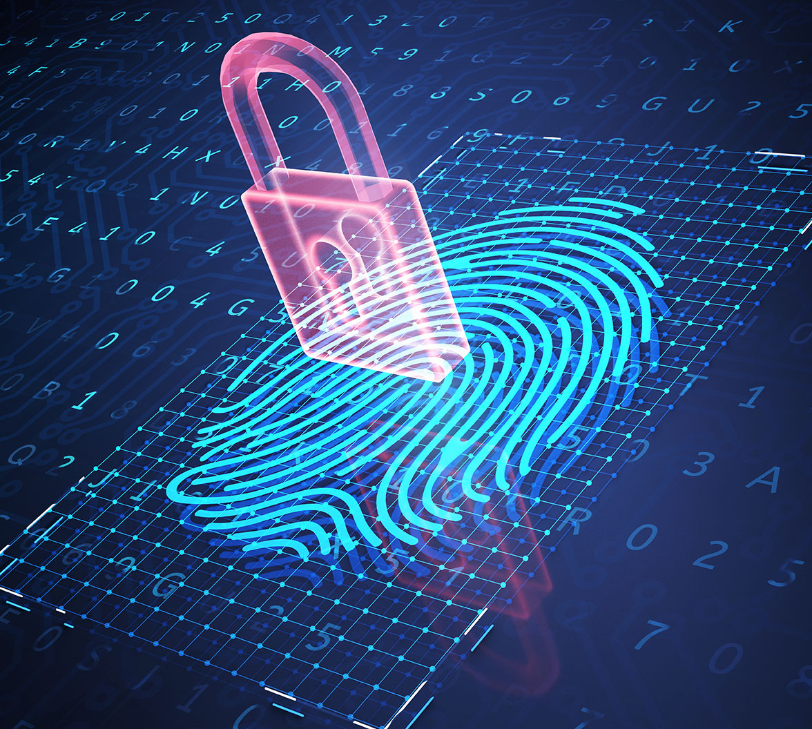
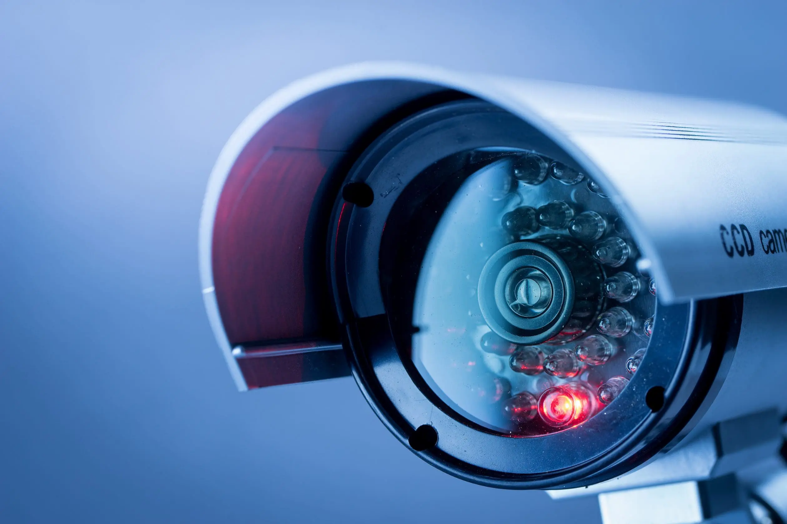

Ethical and Social Issues with Biometric Technology
The utilitarian perspective is all about doing what’s best for the majority of people. It doesn't focus on individual rights but more on total outcome. So when looking at biometrics, some people say it is worth it because it helps millions by making some security systems more efficient and safer. But others say if it causes stress, misidentifies people, or even puts certain groups at risk, then the harm might be greater than the good. With this viewpoint, it’s not about who is hurt, it’s about how many are helped vs. harmed
The fairness perspective is mainly about treating everyone equally. If a biometric system works well for one group but not for another, like it misreads people based on the color of their skin or their age then that is not fair. These technologies can also be unfair to people with disabilities because they might not work right or be easily accessible. This lens asks if everyone is being treated the same way and given the same chance? It also questions if some people are getting unfair power from the system. So it is less about how useful the tech is, and more about who it leaves out or treats unfairly.
The rights lens focuses on the rights we all have just for being human. Stuff like the right to privacy, control over your own body and data, and saying yes or no to agreements. If your face or fingerprint is taken without asking or you’re being tracked in public without knowing, that is a problem for this perspective. Even if its legal, this lens would still say it’s wrong because it breaks the integrity of your basic rights. It cares less about the outcome and more about respecting people no matter the circumstances.
Virtue ethics is more about the type of person or company you are and not just the action you take. It's about honesty, trust, respect, and doing the right thing even when no one is looking. If a company builds a biometric system but doesn't fix bias or keeps users in the dark, then they’re not acting with good character. From this viewpoint, it is not just about making a good product, its about being a good person or organization while doing it.
There are many biometric technologies like fingerprints, face scans, and even your posture or your voice. Biometric data can be a very efficient security layer but it can have many serious ethical problems. A big problem with biometric security is that you can't change your fingerprint or face like a password if the data becomes compromised. Biometrics is your DNA and physical structure it cannot be changed. Once your biometric data is stolen or compromised, it's completely gone and you will not know who has that data which is why its so risky.
Another major concern for biometric use is privacy. Most people aren't even aware when their biometric information is being collected or where it's being stored. Governments and companies sometimes take the information without fully explaining to people what they're going to use it for And once they have it, you cant remove it from them because you won ever truly know if its gone for their storage system.
Then there's the issue of consent. One clicking "I agree" does not necessarily mean they truly understand the risks. The biometric systems are often embedded in telephones, cameras, and buildings, and people just give consent without truly reading the whole terms and conditions. And it does not mean that they agree with what eventually occurs to that data if it is stolen or sold.
There's also a tremendous problem with bias. Some of the biometric technologies do not work as well with people who have darker skin tones, older people, or people with disabilities. That can lead to unequal treatment or being left out altogether. It might not identify a person just because of the way they look or sound, and it is not fair at all.
Finally there's the question of surveillance. When biometrics are being used in public spaces, facial recognition cameras are being used sporadically while you're just walking down the street and you're pretty much in a situation where you're constantly being watched and identified. This kind of system can be abused by authorities, and it can leave regular citizens feeling like they have absolutely no privacy.
So while biometric data certainly does simplify life in some ways, there is also an enormous number of threats that cannot be ignored. These threats are significant because they affect real people, and there is no reversal once this information is compromised.